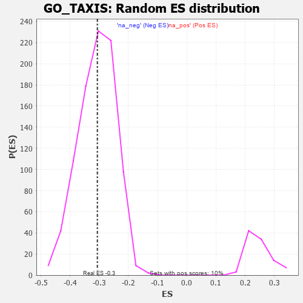

| | | Dataset | 7d |
| Phenotype | NoPhenotypeAvailable |
| Upregulated in class | na_neg |
| GeneSet | GO_TAXIS |
| Enrichment Score (ES) | -0.3066356 |
| Normalized Enrichment Score (NES) | -0.9951855 |
| Nominal p-value | 0.47777778 |
| FDR q-value | 0.8743418 |
| FWER p-Value | 1.0 |
Table: GSEA Results Summary
 Fig 1: Enrichment plot: GO_TAXIS
Fig 1: Enrichment plot: GO_TAXIS
Profile of the Running ES Score & Positions of GeneSet Members on the Rank Ordered List
| PROBE | GENE SYMBOL | GENE_TITLE | RANK IN GENE LIST | RANK METRIC SCORE | RUNNING ES | CORE ENRICHMENT | | 1 | RAC2 | | | 60 | 2.442 | 0.0385 | No |
| 2 | RHOH | | | 228 | 0.987 | 0.0360 | No |
| 3 | HGF | | | 276 | 0.870 | 0.0464 | No |
| 4 | ARX | | | 322 | 0.782 | 0.0555 | No |
| 5 | NUP85 | | | 329 | 0.772 | 0.0693 | No |
| 6 | DAPK2 | | | 343 | 0.754 | 0.0819 | No |
| 7 | LGR6 | | | 360 | 0.738 | 0.0938 | No |
| 8 | PLD1 | | | 381 | 0.716 | 0.1048 | No |
| 9 | LRP1 | | | 470 | 0.648 | 0.1059 | No |
| 10 | DOK6 | | | 536 | 0.616 | 0.1092 | No |
| 11 | HMGB2 | | | 892 | 0.507 | 0.0737 | No |
| 12 | SRC | | | 1128 | 0.459 | 0.0525 | No |
| 13 | GAB1 | | | 1158 | 0.453 | 0.0574 | No |
| 14 | DRGX | | | 1378 | 0.414 | 0.0374 | No |
| 15 | SOS1 | | | 1547 | 0.384 | 0.0232 | No |
| 16 | CNTN4 | | | 1571 | 0.379 | 0.0275 | No |
| 17 | SMAD4 | | | 1860 | 0.326 | -0.0030 | No |
| 18 | NEO1 | | | 1879 | 0.323 | 0.0008 | No |
| 19 | CCR4 | | | 1959 | 0.312 | -0.0033 | No |
| 20 | FOXD1 | | | 2093 | 0.292 | -0.0147 | No |
| 21 | BMP7 | | | 2107 | 0.290 | -0.0109 | No |
| 22 | SYK | | | 2186 | 0.278 | -0.0156 | No |
| 23 | C1QBP | | | 2189 | 0.278 | -0.0106 | No |
| 24 | CREB1 | | | 2243 | 0.269 | -0.0122 | No |
| 25 | ANO6 | | | 2339 | 0.255 | -0.0195 | No |
| 26 | MIF | | | 2357 | 0.252 | -0.0169 | No |
| 27 | LHX9 | | | 2393 | 0.247 | -0.0167 | No |
| 28 | MET | | | 2430 | 0.240 | -0.0167 | No |
| 29 | SRP54 | | | 2544 | 0.220 | -0.0269 | No |
| 30 | VAV3 | | | 2614 | 0.210 | -0.0317 | No |
| 31 | DSCAM | | | 2689 | 0.200 | -0.0373 | No |
| 32 | SLIT2 | | | 2724 | 0.195 | -0.0380 | No |
| 33 | FER | | | 2803 | 0.183 | -0.0444 | No |
| 34 | UNC5C | | | 2997 | 0.150 | -0.0661 | No |
| 35 | LEF1 | | | 3037 | 0.144 | -0.0684 | No |
| 36 | FEZ1 | | | 3055 | 0.142 | -0.0678 | No |
| 37 | LHX3 | | | 3092 | 0.138 | -0.0698 | No |
| 38 | PAX6 | | | 3170 | 0.127 | -0.0772 | No |
| 39 | TRIO | | | 3192 | 0.123 | -0.0775 | No |
| 40 | SMAD3 | | | 3303 | 0.105 | -0.0895 | No |
| 41 | CDK5 | | | 3480 | 0.080 | -0.1104 | No |
| 42 | FES | | | 3501 | 0.077 | -0.1115 | No |
| 43 | GPR18 | | | 3578 | 0.063 | -0.1200 | No |
| 44 | MAPK3 | | | 3589 | 0.062 | -0.1201 | No |
| 45 | SBDS | | | 3640 | 0.053 | -0.1254 | No |
| 46 | NRG3 | | | 3925 | 0.005 | -0.1614 | No |
| 47 | EXT1 | | | 3954 | 0.001 | -0.1650 | No |
| 48 | ROBO2 | | | 4066 | -0.018 | -0.1787 | No |
| 49 | CSF1 | | | 4074 | -0.019 | -0.1792 | No |
| 50 | PDE4B | | | 4089 | -0.022 | -0.1806 | No |
| 51 | CRK | | | 4139 | -0.031 | -0.1862 | No |
| 52 | MACO1 | | | 4162 | -0.035 | -0.1884 | No |
| 53 | GBF1 | | | 4215 | -0.044 | -0.1942 | No |
| 54 | UNC5D | | | 4217 | -0.044 | -0.1935 | No |
| 55 | GPC1 | | | 4238 | -0.048 | -0.1951 | No |
| 56 | RALA | | | 4416 | -0.079 | -0.2161 | No |
| 57 | NPTN | | | 4519 | -0.098 | -0.2272 | No |
| 58 | GATA3 | | | 4614 | -0.120 | -0.2369 | No |
| 59 | ATOH1 | | | 4615 | -0.121 | -0.2346 | No |
| 60 | LMX1A | | | 4631 | -0.124 | -0.2341 | No |
| 61 | LHX2 | | | 4716 | -0.143 | -0.2421 | No |
| 62 | PLCG1 | | | 4770 | -0.151 | -0.2460 | No |
| 63 | P2RX4 | | | 4813 | -0.161 | -0.2483 | No |
| 64 | SLIT3 | | | 4890 | -0.175 | -0.2547 | No |
| 65 | EP300 | | | 4941 | -0.186 | -0.2575 | No |
| 66 | ACKR4 | | | 4981 | -0.194 | -0.2588 | No |
| 67 | PARVA | | | 5187 | -0.245 | -0.2802 | No |
| 68 | SMO | | | 5195 | -0.247 | -0.2765 | No |
| 69 | EPHA4 | | | 5273 | -0.265 | -0.2812 | No |
| 70 | ELMO2 | | | 5341 | -0.283 | -0.2844 | No |
| 71 | EPHA1 | | | 5349 | -0.285 | -0.2799 | No |
| 72 | LYST | | | 5448 | -0.307 | -0.2866 | No |
| 73 | KIF3A | | | 5480 | -0.313 | -0.2846 | No |
| 74 | FGFR1 | | | 5543 | -0.332 | -0.2862 | No |
| 75 | GFRA1 | | | 5594 | -0.342 | -0.2861 | No |
| 76 | WNK1 | | | 5650 | -0.362 | -0.2862 | No |
| 77 | SLIT1 | | | 5735 | -0.387 | -0.2896 | No |
| 78 | RAB13 | | | 5870 | -0.425 | -0.2986 | Yes |
| 79 | VLDLR | | | 5898 | -0.434 | -0.2938 | Yes |
| 80 | CXCR5 | | | 5954 | -0.456 | -0.2922 | Yes |
| 81 | RAC1 | | | 6036 | -0.484 | -0.2934 | Yes |
| 82 | EVL | | | 6052 | -0.490 | -0.2860 | Yes |
| 83 | CALR | | | 6077 | -0.499 | -0.2796 | Yes |
| 84 | FEZF2 | | | 6150 | -0.519 | -0.2790 | Yes |
| 85 | STK39 | | | 6274 | -0.563 | -0.2840 | Yes |
| 86 | NCAM1 | | | 6318 | -0.582 | -0.2784 | Yes |
| 87 | TRPM4 | | | 6390 | -0.612 | -0.2759 | Yes |
| 88 | DYSF | | | 6481 | -0.654 | -0.2750 | Yes |
| 89 | LAMA1 | | | 6496 | -0.659 | -0.2643 | Yes |
| 90 | DPP4 | | | 6501 | -0.663 | -0.2523 | Yes |
| 91 | TRPV4 | | | 6515 | -0.668 | -0.2413 | Yes |
| 92 | ROBO1 | | | 6577 | -0.699 | -0.2359 | Yes |
| 93 | DNM1L | | | 6963 | -0.913 | -0.2676 | Yes |
| 94 | CCR2 | | | 7003 | -0.939 | -0.2548 | Yes |
| 95 | NR4A1 | | | 7022 | -0.951 | -0.2391 | Yes |
| 96 | MYH10 | | | 7048 | -0.966 | -0.2240 | Yes |
| 97 | RYK | | | 7102 | -1.000 | -0.2118 | Yes |
| 98 | PTPRJ | | | 7180 | -1.054 | -0.2017 | Yes |
| 99 | LHX1 | | | 7431 | -1.305 | -0.2088 | Yes |
| 100 | PPIB | | | 7499 | -1.396 | -0.1909 | Yes |
| 101 | LAMA2 | | | 7549 | -1.468 | -0.1694 | Yes |
| 102 | DCC | | | 7550 | -1.470 | -0.1416 | Yes |
| 103 | MCU | | | 7644 | -1.637 | -0.1225 | Yes |
| 104 | TRPM2 | | | 7680 | -1.712 | -0.0946 | Yes |
| 105 | PDE4D | | | 7764 | -1.944 | -0.0684 | Yes |
| 106 | DLX5 | | | 7845 | -2.378 | -0.0337 | Yes |
| 107 | FYN | | | 7881 | -2.622 | 0.0114 | Yes |
Table: GSEA details [plain text format]

Fig 2: GO_TAXIS: Random ES distribution
Gene set null distribution of ES for GO_TAXIS